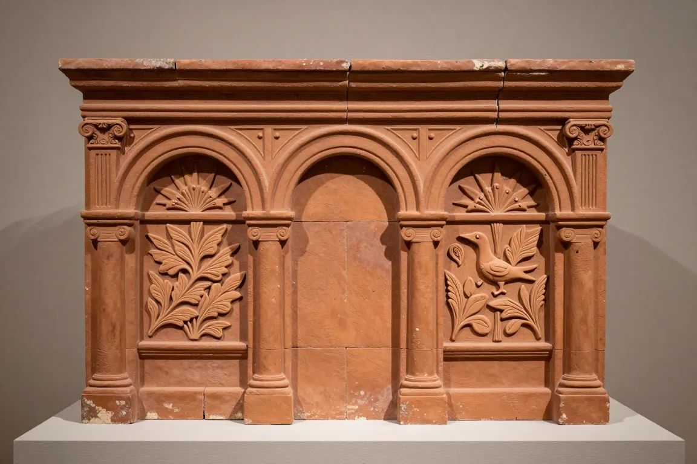

Обожжённые глиняные блоки палевого, красного и серо-голубого цвета, которые английские мастера прессовали в формах для музеев, школ и ратуш. В дымном городе глина оставалась в цвете там, где камень чернел, и стоила дёшево.

Главная идея
Дымному промышленному городу нужен фасад, который смывает дождь: глазурованный или жёстко обожжённый глиняный блок даёт богатый орнамент по цене, недоступной каменотёсу.
Принципы дизайна
Прессуйте орнамент в гипсовых формах, чтобы один рисунок повторялся по всему фасаду.
Делайте каждый блок полым, с перегородками внутри, толщиной 25–50 мм, чтобы он сох и обжигался без трещин.
Берите один цвет для основной стены и второй для пояса, арки и фриза.
Лепите растительные и животные формы высоким рельефом: листья, птицы, плоды, звери и романские арки.
Обжигайте блоки при высокой температуре, пока глина не станет твёрдой и не впитывает сажу.
Вешайте блоки на кирпичный или железный каркас на железных скобах и заполняйте полость раствором.
Добавляйте глазурь или цветной ангоб на поясах, которые должен смывать дождь.
Антипаттерны
Гладкий фасад из литого бетона без лепного орнамента
Блоки, чей цвет меняется от обжига к обжигу
Каменная деталь, которую каменотёс вырезает по одной